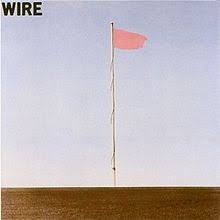
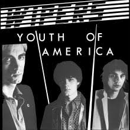

Punk describes both an attitude/aesthetic and a particular sound. The attitude is based on a raw, do-it-yourself, and unclean lifestyle that many punk artists portrayed. The music is centered around simplicity, realism, and, again, rawness. Songs are typically short, instruments are usually limited to drums, guitars, and vocals, production tends to be quality, and lyrics often describe everyday life, from politics to boredom. The movement became huge starting in the late 1970s, and from there it grew more experimental, subdividing into a few different groups.
Punk Rock
Punk rock was a movement that originated in the mid to late 1970s, as many young musicians were unhappy with the state of rock music during that time. They were tired of the progressive rock movement, and they wanted to return rock to its basics. This innovation, along with the rebellious attitude of the community, helped punk become the biggest subgenre of rock music in the late 70s. It didn't take long for the genre to expand into other styles, though. Within a year of the first punk albums being released, many bands started to experiment within the genre, forming post punk, and other bands added synthesizers and took punk in a more dance-oriented direction with new wave. Punk has continued to be an influential and popular style of music, both in terms of the style of music and the attitude: it influenced the alternative scene of the 80s, through pop punk and skate punk it reigned as one of the most popular styles of music in the mid 90s, a more hardcore style of punk has combined with metal to form metalcore, and the punk/DIY attitude has remained popular throughout popular music.
Best and Most Notable Albums
Fig. 1Fig. 2Fig. 3Fig. 4

Fig. 5Fig. 6
Fig. 1: Sex Pistols - Never Mind the Bollocks, Here's the Sex Pistols
Fig. 2: Television - Marquee Moon
Fig. 3: Modern Lovers - Modern Lovers
Fig. 4: The Clash - London Calling
Fig. 5: Wire - Pink Flag
Fig. 6: Ramones - Ramones
Post Punk
Post punk started during the punk rock movement of the late 1970s. Post punk bands took the energy and simplicity of punk, but experimented with compositional ideas and brought together elements from other genres and movements, such as Funk, Jazz, Minimalism, and Electronic. The genre peaked in the late 70s and mid 80s, but it has seen revivals, first in the early 2000s, with a more dance-oriented and radio-friendly sound, and now in the late 2010s there are several bands continuing the genre's legacy.
Best and Most Notable Albums
Fig. 1Fig. 2Fig. 3Fig. 4Fig. 5

Fig. 6
Fig. 1: Joy Division - Unknown Pleasures
Fig. 2: Wire - Chairs Missing
Fig. 3: Gang of Four - Entertainment
Fig. 4: Talking Heads - Talking Heads: 77
Fig. 5: Minutemen - Double Nickels on the Dime
Fig. 6: Wipers - Youth of America
New Wave
New wave emerged in the late 1970s as post punk's more playful and pop-oriented counterpart. It has a similar sound to post punk in that it takes punk's simplicity and attitude and adds more outside influences and experimentation, but while post punk usually has a darker sound, new wave is catchier, happier, and usually involves synthesizers. The movement remained popular throughout the 80s and eventually the electronic elements led to other genres like synthpop and electropop.
Best and Most Notable Albums
Fig. 1Fig. 2Fig. 3Fig. 4Fig. 5Fig. 6
Fig. 1: Blondie - Parallel Lines
Fig. 2: Elvis Costello - This Year's Model
Fig. 3: Talking Heads - Remain in Light
Fig. 4: New Order - Power, Corruption, & Lies
Fig. 5: Devo - Q: Are We Not Men? A: We are Devo!
Fig. 6: The Cars - The Cars
Post Hardcore
Post hardcore takes the energy, ferocity, and noise of hardcore punk but experiments with more creative ways of portraying anger and tension than simply keeping the music loud and angry. It began in the 1980s and became more and more experimental and diverse as it continued through the 90s and 00s. The vocals can range from whispering to shouting to screaming, but there is generally a strong emotional atmosphere throughout the music.
Best and Most Notable Albums
Fig. 1Fig. 2Fig. 3Fig. 4Fig. 5Fig. 6
Fig. 1: Husker Du - Zen Arcade
Fig. 2: Fugazi - Repeater
Fig. 3: Slint - Spiderland
Fig. 4: At the Drive In - Relationship of Command
Fig. 5: Pile - A Hairshirt of Purpose
Fig. 6: Idles - Joy as an Act of Resistance